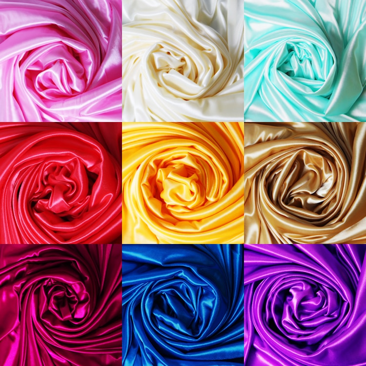
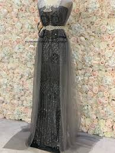
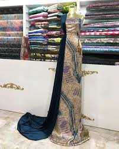

scroll down to see more and learn more about our products!
Textiles
Satin & satin silk
100% Satin Silk.
Our Product satin one
of our best sellers, you
can even order your own colors
Mesh (tor)
 Visit our Branchs!
there is a big range of what we can provide,
this includes Satin and Satin silk in over 100 colors,
you can request how many yards you'd like. we also have
meshm (tor) makhmar (velvet) all kinds and all colors!,
nakhie also great for when the weather is starting to get warm
and people want something thats soft and comfortable!, our company
sells mostly in bulk but if you visit our shop in your local area
you are welcome to come and see the product upclose!A satin weave
is a type of fabric weave that produces a characteristically glossy,
smooth or lustrous material, typically with a glossy top surface
and a dull back. It is one of three fundamental types of textile
weaves alongside plain weave and twill weave.There are a few different
versions of mesh fabric, but this type of fabric is typified by its
lightweight heft and permeable texture. Unlike most types of fabric,
which feature closely-woven textures, mesh is woven loosely, which results
in thousands of tiny holes being present in each mesh garment.
Acrylic is
lightweight, soft, and warm, with a wool-like feel.[2] It can also be made to
mimic other fibers, such as cotton when spun on short staple equipment. Some
acrylic is extruded in colored or pigmented form; other is extruded in "ecru",
otherwise known as "natural," "raw white," or "undyed." Pigmented fiber has the
highest lightfastness. Its fibers are very resilient compared to both other
synthetics and natural fibers.
Contact>
Email: Diakokh@gmail.com
our Main Office is located in the heart of Saqqez feel free to drop by!
Iran Saqqez Kurdistan province
st. daro khana Dr.babak behind
Kurdistan mall